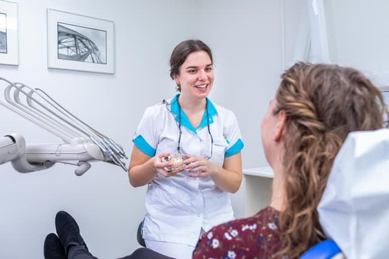
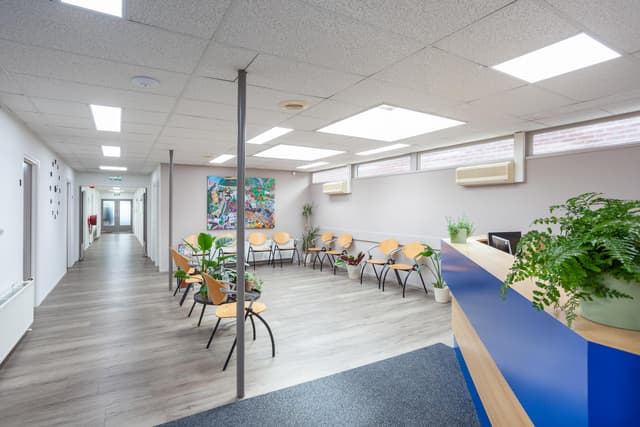
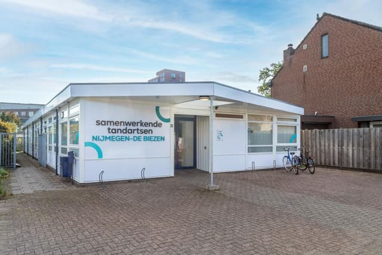

Tandarts in Nijmegen, Waterstraat 104
Voor een gezonde lach, met mensen die de tijd nemen.
Toegankelijk, gastvrij en gedreven: zo werken we samen aan de gezondheid van uw mond. Met tandartsen, mondhygiënisten en een prothese technicus onder één dak, in zes ruime behandelkamers.

8,9
gemiddeld cijfer uit 1935 patiëntbeoordelingen

Ziet u op tegen de tandarts? Dat mag u gewoon zeggen.
Wij leggen uit wat we zien en wat we gaan doen, en houden rekening met spanning. Dat schrijven patiënten zelf:
"Fijn personeel dat rekening houdt met mijn tandartsfobie. Heel prettig en ben zeer tevreden. De mensen die er werken zijn lief en zorgzaam. Ik had hier jaren geleden al naar toe moeten gaan. Praktijk is prettig qua inrichting. Hier voel ik me dus wel veilig."
"Zeer vriendelijk personeel en een uitstekende service. Ze leggen alles heel goed uit. Ze hielden ook erg rekening met mijn angst."
Ruim, licht en dichtbij in de Biezen
De praktijk heeft zes ruim ingerichte behandelkamers en voldoende parkeergelegenheid voor de deur. Heeft u een vraag? Loop gerust binnen, een van onze medewerkers helpt u graag verder.




Waarom samenwerkende tandartsen?
Tandartsen, mondhygiënisten, assistentes en een klinisch prothese technicus werken hier samen aan uw mondgezondheid. Op een betrokken manier, zodat u en uw gezin een persoonlijke keuze kunnen maken, op basis van goede voorlichting en vertrouwen.
Alle tandartsen staan ingeschreven in het BIG-register. Erkend leerbedrijf en ISO gecertificeerd.
Waarvoor u bij ons terechtkunt
De tandartstarieven worden elk jaar vastgesteld door de NZa en zijn bij iedere praktijk hetzelfde. Of u iets vergoed krijgt, hangt af van uw aanvullende verzekering.
Voor kinderen tot 18 jaar wordt tandheelkunde volledig vergoed uit het basispakket, behalve kroon- en brugwerk en orthodontie.
- Periodieke controle
- Een halfjaarlijkse controle is op iedere leeftijd belangrijk. We kijken naar meer dan alleen het gebit, controleren op gaatjes en of uw tandvlees gezond is, en maken waar nodig foto's.
- Algemene tandheelkunde
- Controles en behandelingen door de tandarts. Is er meer nodig, dan verwijzen we u op tijd door, bijvoorbeeld naar een parodontoloog bij tandvleesontsteking of een orthodontist voor een beugel.
- Mondhygiëne
- Drie mondhygiënisten helpen u met het verwijderen van tandsteen en geven advies om uw tanden en tandvlees gezond te houden.
- Prothese
- Een klinisch prothese technicus in eigen huis, voor een kunstgebit dat goed past.
- Invisalign
- Tanden rechtzetten met doorzichtige beugels, bij tandarts J. Wang.
- MRA
- Behandeling met een MRA, bij chef de clinique M. van Lent.

De mensen die u ziet
Van de balie tot de behandelstoel. Als erkend leerbedrijf leiden we ook studenten tandheelkunde op.
Tandartsen
M. van Lent
Chef de clinique, tandarts, MRA-behandelaar
BIG 69931758002A. Figueroa Mendoza
Tandarts
BIG 29916477802J. Wang
Tandarts, Invisalign-behandelaar
BIG 79927202102J. van Grinsven
Tandarts
BIG 79931180102
Mondzorg en prothese
N. Wijers
Mondhygiënist
L. Willems
Mondhygiënist
L. Witjes
Mondhygiënist
F. Overveld
Klinisch prothese technicus
Betül
Preventieassistente
Assistentie, balie en praktijk
Jolanda, Souad en Wendy
Tandartsassistentes
Sandra en Monique
Baliemedewerksters
Corien
Praktijkmanager
Karlijn, Fleur en Tom
Studenten tandheelkunde
Wat patiënten vertellen
4,1 uit 62 reviews op Google
"Kom al mijn hele leven bij deze tandartsenpraktijk en sinds een jaar of twee bij tandarts Joyce. Ze is zeer kundig en precies, vraagt om advies van een collega wanneer ze ergens over twijfelt. Tijdens het werk neemt ze je mee in wat ze ziet/denkt of de stappen die ze tijdens een behandeling zet. Ze denkt proactief mee"
"Hele fijne tandarts, ik voel mij erg gehoord, en wordt goed naar mij geluisterd. Marith neemt de tijd en denk goed met mij mee."
"Ik kom hier al zo'n 30 jaar tot volle tevredenheid. Word altijd vriendelijk ontvangen door de receptionistes. Tandarts, tandartsassistentes en de mondhygiëniste zijn professioneel, belangstellend en nemen de tijd voor je !"
Zo vindt u ons
Waterstraat 1046541 TL Nijmegen Route plannen in Google Maps
- Met de bus: Arriva bus 85 en Breng bus 89 (halte Vlietstraat), Breng bus 5 (halte Havenweg).
- Lopend: ongeveer 17 minuten vanaf station Nijmegen.
- Met de auto: er is voldoende parkeergelegenheid bij de praktijk.
Openingstijden
- Maandag
- 08:00 tot 17:00
- Dinsdag
- 08:00 tot 17:00
- Woensdag
- 08:00 tot 17:00
- Donderdag
- 08:00 tot 17:00
- Vrijdag
- 08:00 tot 17:00
- Zaterdag en zondag
- Gesloten
Tijdens feestdagen kunnen de tijden afwijken.
Spoed of acute pijn
Tijdens openingstijden belt u gewoon de praktijk. Buiten openingstijden, in het weekend en op feestdagen belt u bij pijn of een spoedgeval dat niet tot de volgende werkdag kan wachten de spoeddienst.
Spoeddienst 0900-8602